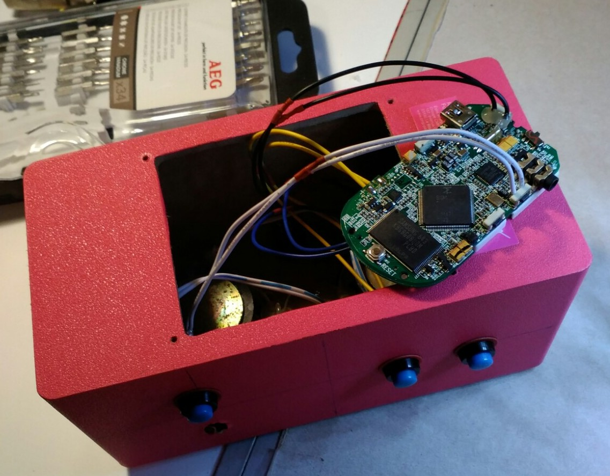

Last update on 24/04/2020
Introduction
This page describes an idea how to recycle an old MP3 player.
I had an MP3 player with broken screen and also a low quality speaker from a low cost market. So, I decided to reuse both of them and to make a Fairy Tail Speaker for my daughter. It could be a good alternative to musical books or children musical phones.
What I needed:
-
MP3 player
-
speeker
-
USB cable
-
several push buttons
-
7-pin connector
-
USB battery (optionnal)
Put Things Together
The idea is very simple:
-
put the things together
-
add some buttons to be able to navigate between stories
-
add a connector for supply and for MP3 download
The diagram of connections:
Inside of my Old MP3 player:

I soldered buttons and fixed them to the speaker case:

The 7-pin connector which I use in every DIY project. I cut a mini USB cable on two parts: one part goes from an USB battery to the connector, another one goes from the connector to the player:

I added some stickers to reconize the commands:

And the final look after a month of use:

Conclusion
So, the Fairy Tail Speaker works! I download up to 10 stories at the same time to facilitate navigation by buttons.
I won also a Li-ion battery from the MP3 player which can be reused in another DIY project.